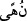
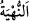
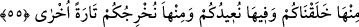

sonsuz hikmetine apaçık deliller vardır.
“
” kelimesi, “
”nin çoğuludur. Akıl insanı bâtıla uymaktan, kötülük işlemekten
nehyettiği/alıkoyduğu için ona bu isim verilmiştir. Yine bu mânâda akıla “el-hacr” ismi
de verilmiştir. Hem “akl”ın hem de “hacr”in kelime mânâsı, akıl sâhiplerini bâtıldan
nehyeden demektir. Azgınların iddiâ ettiği ilâhlık ve onlara uyan sapıklıklar hep
bâtıldır. Âyette belirtilen hususlar bütün âlemlere âyet ve işâret olduğu halde sadece
akıl sâhiplerinin tahsis edilmesi, onlardan faydalananın onlar olması bakımındandır.
55. Sizi ondan (topraktan) yarattık; yine sizi oraya döndüreceğiz ve bir kez daha
sizi ondan çıkaracağız.
“Sizi ondan” yani yeryüzünden, topraktan “yarattık.” et-Te’vîlâtü’n-Necmiyye’de
der ki: “Sizi Allah Teâlâ’nın Azrâil’e yeryüzünün her tarafından almasını emrettiği
topraktan yarattık.”
Biz sizi aslınız olan Âdem vâsıtasıyla yarattık. Yoksa Âdem ve Havvâ dışında bütün
insanlar nutfeden yaratılmıştır. “Halk (yaratma)”nın asıl mânâsı, doğru takdir etmek
demektir. Bir şeyi aslı ve benzeri olmadan yaratmak mânâsına kullanılır. Nitekim Allah
Teâlâ “Gökleri ve yeri yarattı.” (en-Nahl, 16/3) buyurmuştur. Yine bu kelime, burada
olduğu gibi bir şeyden bir şeyi yaratmak mânâsına da kullanılır.
“Yine sizi oraya döndüreceğiz.” Yani öldüğünüz zaman toprağınızın kabzedildiği yere
gömülmek sûretiyle sizi toprağa döndürürüz.
“Ve bir kez daha sizi ondan çıkaracağız.” Yani ba‘s/öldükten sonra dirilme sırasında
parçalarınızı bir araya getirerek, cesedlerinize tekrar şekil vererek ve ruhlarınızı
bedenlerinize geri döndürerek sizi hesap vermek üzere tekrar topraktan çıkaracağız.
Âyette “bir kez daha sizi ondan çıkaracağız” buyrulması, her ne kadar aynı olmasa
da ilk yaratılışın da topraktan çıkarmak olmasındandır.
Hakîm Firdevsî der ki:
Pâk olan Hak Teâlâ seni toprağa götürür
Diğer bir yol ile topraktan dışarı çıkarır
Ne halde toprak olursan
O türlü topraktan çıkarsın
Eğer toprakta pâk bir makam tutarsan
Oradan nâmı pâk ve pâkîze olarak çıkarsın
İbn Abbâs (r.anhümâ)’dan rivâyete göre bir gün Cebrâil (a.s.) Nebî (s.a.)’e geldi ve